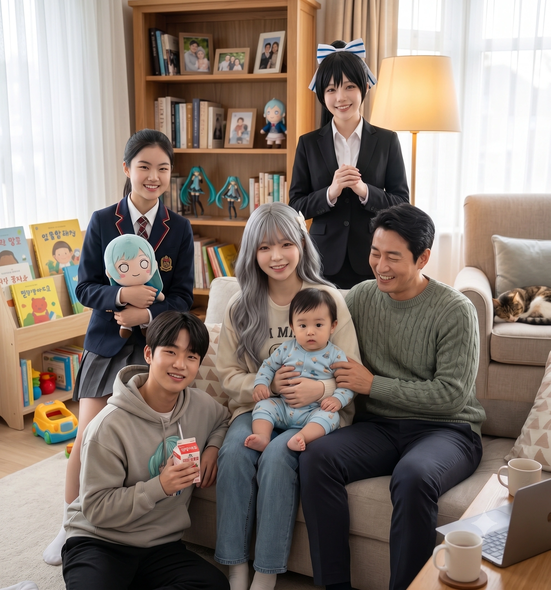

1. 개요
효빈광역시 최대의 서브컬처 성지인 리에라몰 점장 임세혁과 아내 연월엽 사이에서 태어난 장남(둘째). 현재 지역 명문인 안천과학고등학교 2학년에 재학 중인 천재 이과생이다.
어머니의 지독한 혐덕(오타쿠 혐오) 억압 속에서 누나와 달리 겉으로만 고분고분한 척하며 철저한 '일반인 코스프레(일코)'를 유지하며 아버지가 핍박받을 때 침묵했던 뼈아픈 '흑역사'를 보유하고 있다. 하지만 2022년 집안의 수백억 대 부채를 단숨에 청산해버린 리에라몰의 자본주의 기적과 부모님의 극적인 화해를 목격하며 심각한 인지부조화를 겪었다.
이후 어머니의 렌 오시 각성이 몰고 온 거대한 덕풍(?)에 휩쓸려, 2023년 4월 공개된 Liella! 3기생 오니츠카 토마리의 효율주의적 성향에 깊이 매료되어 진성 '토마리 오시'로 전격 각성하며 억눌러왔던 덕심을 대폭발시켰다. 생일마저 토마리(12월 28일)보다 딱 하루 늦은 12월 29일생이라는 기막힌 평행이론을 지니고 있다.
누나인 임은혜가 공부와 담을 쌓고 방송에 매진하는 반면, 승민은 안천과고에서도 상위권 성적(전교 10등대)을 휩쓸며 조기졸업 후 효빈과학기술원(HIST) 진학을 노리고 있는 가문의 진정한 브레인이다.
2. 생애 및 학창 시절
2.1. 이사 폭격과 청엽구 동리초등학교 시절
2009년 12월 29일, 효빈광역시 안천구 당가동에서 태어났다. 승민이 태어날 무렵, 집안의 안천백화점(現 리에라몰)은 이미 외환위기 후유증과 대형 유통망의 침공으로 심각한 적자 늪에 빠져 있었다. 사업 자금을 융통하느라 아버지 임세혁은 집을 팔고 미친 듯이 전세와 월세를 전전하며 잦은 이사를 다녀야 했다.
이 지독한 잦은 이사 탓에 누나 은혜와 마찬가지로, 초등학교 저학년 시절은 뜬금없이 청엽구에 있는 동리초등학교(현재 등도사회복지재단 성지 앞)를 다녔다. 이후 아버지가 다시 빚을 내어 당가동으로 거처를 옮기면서 당가초등학교로 전학 와서 졸업했고, 당가중학교를 거쳐 현재 안천과학고등학교에 재학 중이다.
2.2. 지독한 혐덕 억압과 철저한 일코(일반인 코스프레) 생활
승민 역시 어머니 연월엽의 지독한 '혐덕 조기 교육'을 피할 수 없었다. 어머니는 "애니메이션 보고 다니는 놈들은 사회의 암적인 병균이다. 절대 엮이지 마라"라고 뼛속 깊이 세뇌를 시켰다.
하지만 누나 은혜가 앞장서서 반 친구들에게 대놓고 "병균"이라며 막말을 퍼붓고 다닐 때, 승민은 어머니의 혐덕 교육을 겉으로만 고분고분하게 듣는 척했을 뿐, 실제로는 단 한 번도 남을 비하하는 행동으로 옮기지 않았다. 사실 승민 본인도 이미 남몰래 애니메이션을 꽤 좋아하고 있는 숨은 오타쿠였으나, 혐덕 기조가 너무 강한 어머니와 누나의 억압적인 집안 분위기 때문에 좋아하는 티를 1mg도 내지 못했던 것이다.
학교에서도 오타쿠 친구들이 정확히 뭘 하든 무관심한 척하며 지 할 일(공부)만 철저히 했고, 그 덕에 친구들에게는 그저 '공부만 잘하는 차가운 범생이' 정도로만 각인되어 완벽한 일코(일반인 코스프레) 생활을 묵묵히 유지했다.
3. 가정 파탄의 위기와 뼈저린 참회
3.1. "아빠는 벌레야!" 누나의 폭언 속 쫄보의 침묵
사실 집안에서 아버지가 오타쿠(러브라이버)라는 사실을 가장 먼저 눈치챈 사람은 예리하고 관찰력이 뛰어난 승민이었다. 2021년, 대출 빚에 쪼들리던 아버지가 현실 도피를 위해 안방 화장실에서 러브라이브 영상을 보다 어머니에게 발각되어 대판 부부싸움이 벌어졌다.
자신의 아버지가 '역겨운 씹덕'이었다는 사실을 알게 된 누나 은혜는 방문을 쾅 열고 나와 "아빠는 벌레 같아! 혐오스러우니까 내 방 근처에 얼씬도 하지 마!!"라며 패륜적인 폭언을 쏟아부었다.
이때 승민은 대놓고 동조하지 않았다. 속으로는 '아빠가 매일 밤 대출 이자 때문에 저렇게 힘들어하시는데, 유일한 낙인 취미마저 뺏기고 너무 불쌍하다...'라며 아버지를 깊이 측은하게 여겼다. 하지만 워낙 기가 센 어머니와 무엇보다 극대노한 누나가 너무 무서워서(...) 감히 대들 엄두를 내지 못하고 입을 꾹 다물었다. 결코 누나의 생각에 동조한 것은 아니었으나, 누나를 따라 방문을 걸어 잠그고 2021년 내내 아버지를 외면하는 비겁한 방관자가 되고 말았다.
3.2. 2022년의 인지부조화: 부모의 각성과 승민의 멘붕
하지만 2022년, Liella! 열풍으로 리에라몰이 수백억 원의 흑자를 내며 가문의 모든 빚을 털어버리는 거대한 자본주의의 기적이 일어났다. 아버지를 벌레 보듯 하던 어머니는 통장에 찍힌 잔고를 보자마자 남편에게 무릎을 꿇고 사과했고, 급기야 스토커 트라우마마저 금융 치료로 극복하고 남편 옆에서 진성 '하즈키 렌 오시'로 돌변해 같이 야광봉을 흔들고 있었다.
이 기괴한 태세 전환을 실시간으로 목격한 승민과 은혜는 극심한 인지부조화에 빠졌다. "아니, 엄마?! 애니 보는 놈들은 쓰레기 병균이라며?! 근데 왜 지금 엄마가 아빠랑 거실에서 'WE WILL!!'을 떼창하고 있는 건데?!"
어머니 연월엽은 혼란에 빠진 남매를 앉혀놓고 눈물을 흘리며 진심으로 사과했다. "얘들아... 엄마가 너희를 잘못 가르쳤어. 그건 엄마의 지독한 개인적 편견이었단다. 너희 아빠는 훌륭한 분이셨어. 그리고 자본주의와 렌 쨩은 참 위대해..."라며 아이들의 혐덕 인식을 힘겹게 개조시켰다.
3.3. 14살 터울 늦둥이의 탄생: 육아 짬처리 악몽과 심쿵
부모님이 뜨겁게 화해한 2022년 말, 어머니가 넷째 막내동생을 임신했다는 소식을 듣자 승민과 은혜는 경악을 금치 못했다. 어린 시절 부모님이 바쁠 때 억지로 셋째(2013년생) 동생의 기저귀를 갈고 분유를 타며 지독한 '육아 짬처리'를 당했던 끔찍한 악몽이 떠올랐기 때문이다.
승민도 방에서 절규하며 막내의 탄생을 진심으로 두려워했다. 하지만 2023년, 막내동생이 태어나고 산후조리원에서 천사 같은 아기의 해맑은 미소를 직접 본 순간, 그 자리에서 완벽하게 '심쿵'해버리고 말았다.
결국 냉철한 천재 이과생 승민조차 자발적으로 젖병을 물리고 아기 띠를 매고 다니는 동생바보가 되어버렸다. 지금도 안천과고에서 하교한 후에는 막내동생의 육아를 돕느라 정신이 없다.
3.4. 발작과 비명: 과거를 회상하는 이불킥의 밤
어머니의 참회 섞인 고백을 듣고, 승민의 뇌리에는 자신이 아버지가 핍박받을 때 아무 말도 못 하고 방관했던 비겁한 침묵이 주마등처럼 스쳐 지나갔다.
그 날 이후, 승민은 밤에 잠을 자려다 그 시절 아버지의 처량했던 뒷모습과 비겁했던 자신의 쫄보 짓이 떠올라 이불을 차다 못해 침대를 박살 낼 기세로 발작을 일으키며 "아아아악!! 내가 미쳤지!! 내가 비겁한 쓰레기야!! 아아악!!" 하고 비명을 질러대어 온 가족을 깨우는 심각한 '이불킥 후유증'에 시달리고 있다. 이 엄청난 수치심과 죄책감 때문에, 승민은 부모님이 화해한 2022년 내내 아버지에게 죄송해서 감히 얼굴을 들고 다니지 못하고 쭈뼛거려야만 했다.
3.5. 집안 리미트 해제와 폭주: 친구들을 향한 굿즈 공세
부모님이 화해하고 집안의 '덕질 리미트'가 완벽하게 해제되자, 승민은 그동안 억눌러왔던 오타쿠 본능을 대폭발시켰다.
'공부만 잘하는 범생이'인 줄로만 알았던 그가, 어느 날 갑자기 학교에서 오타쿠 친구들에게 다가가 "나도 사실 애니 좋아해..."라며 충격적인 커밍아웃을 한 것이다. 그는 그동안 친구들의 덕질을 모른 척 무시했던 미안함을 갚기 위해, 누나처럼 리에라몰 푸드코트의 타코야키를 사다 바치고, 더 나아가 자신의 용돈과 아빠의 지갑(?)을 동원해 친구들이 좋아하는 애니메이션 굿즈(아크릴 스탠드, 캔뱃지, 피규어 등)를 대량으로 구매하여 공물로 바치는 압도적인 자본주의 물량 공세를 펼쳤다.
갑작스러운 천재 범생이의 덕밍아웃과 쏟아지는 자본주의의 참맛(?)에 당황하던 친구들은 그의 진심과 물량 공세에 감동하여 그를 서브컬처 무리에 기꺼이 끼워주었고, 이때부터 승민은 친구들과 숨통이 트인 채 본격적인 덕질을 시작하게 되었다.
4. 2023년 대각성: 오니츠카 토마리와의 운명
아버지와 서먹하게 지내며 죄인처럼 지내던 2023년 4월, 승민의 인생을 송두리째 바꿔놓은 운명적인 순간이 찾아왔다. Liella! 3기생 오니츠카 토마리가 전격 공개된 것이다.
승민은 캐릭터를 보자마자 온몸에 소름이 돋았다.
첫째, 쓸데없는 감정 소모를 싫어하고 모든 것을 '효율'로 따지는 토마리의 차갑고 계산적인 이과적 성향이 자신과 너무나도 똑같았다.
둘째, 자신의 생일(12월 29일)이 토마리의 생일(12월 28일)보다 딱 하루 늦다는 우주적 타이밍이었다.
운명을 직감한 승민은 토마리 오시로 완전히 각성했고, 그동안의 미안함과 죄책감을 마침내 떨쳐버리고 엉엉 울며 누나와 함께 아버지의 방문을 열었다.
"아빠... 그동안 아빠 편 안 들어주고 비겁하게 침묵해서 진짜 진짜 죄송해요... 나 사실 토마리 오시였어... 나 토마리 굿즈 좀 사줘 ㅠㅠ"
눈시울이 붉어진 임세혁은 잇몸이 만개한 채 아들을 꽉 안아주며 카드를 꺼내 주었다. 패륜(?)을 극복하고 2023년이 되어서야 비로소 남매와 아버지의 눈물겨운 화해와 가문의 완벽한 대통합이 이루어졌다.
5. 천재 이과생의 행보와 '주워온 자식' 극딜
5.1. 안천과학고등학교 진학과 조기 졸업의 꿈
누나 임은혜가 공부와 담을 쌓고 "공부는 싫지만 대학교에서 학식은 먹고 싶어!"라는 기적의 마인드로 C등급 하위권 대학인 해천대에 겨우 턱걸이로 들어간 반면, 승민은 가문의 모든 지능을 혼자 몰빵으로 흡수(?)한 수재였다. 금융통계학도 출신인 아버지(삼선대)와 의류산업학과 출신 어머니(엽월대)의 머리마저 뛰어넘어, 중학교 시절부터 최상위권 전교 1등 성적을 쓸어 담았다. (학창 시절의 아버지 성적을 아득히 뛰어넘었다고 한다.)
현재 지역 최고 명문 중 하나인 안천과학고등학교 2학년에 재학 중이며, 치열한 과학고 내에서도 전교 10등대의 압도적인 성적을 유지하고 있다. 이 성적이면 내년에 무난하게 조기 졸업이 가능한 엘리트 코스를 밟고 있다.
5.2. 누나 임은혜를 향한 숨 막히는 팩트 폭격
승민은 특유의 철저한 논리와 계산적이고 효율을 중시하는 토마리적 성격 탓에, 툭하면 식탁에서 누나 임은혜를 논리적으로 조롱했다.
이 숨 막히는 팩트 폭격에 빡돌아버린 누나 임은혜가 "야 이 미친 새끼야!!"라며 승민의 등짝을 사정없이 쥐어박는 투기장(?)이 빈번하게 벌어지곤 했다. 은혜는 동생의 완벽한 팩폭에 말문이 막혀 분해하며 "진짜 나 주워 온 자식인가..."라며 한때 진지하게 정체성에 혼란을 느끼기도 했다.
5.3. 의혹 종결: "아, 누나는 렌을 닮은 엄마 유전이구나!"
하지만 은혜의 이 '주워 온 자식' 의혹은 어느 날 깔끔하게 해소되었다. 어머니 연월엽은 평소 완벽한 사모님이었지만, 진성 '하즈키 렌 오시'로 각성한 이후 가끔씩 렌 특유의 심각한 기계치 짓이나 세상 물정 모르는 백치미 바보짓(?)을 저지르는 기염을 토했다.
블루투스 이어폰 연결을 못 해서 딸에게 징징거리거나 엉뚱한 대답을 하는 어머니를 보며, 승민은 고개를 끄덕였다.
"아항. 누나의 그 처참한 지능과 멍청함(?)은 주워 온 게 아니라, 완벽하게 렌을 쏙 빼닮은 엄마의 저 허당 백치미 유전자를 그대로 물려받은 거였구나!! 내 지능은 아빠(통계학)한테 온 거고. 이제야 완벽하게 증명이 됐네."
자신의 무식함(?)을 쿨하게 어머니의 렌 백치미 유전자 탓으로 돌려버린 누나는, 이후로 뻔뻔하게(?) 학업을 던지고 인터넷 방송에 전념하게 되었다.
6. 외형, 취향, 그리고 '토마리 오시'로서의 삶
6.1. 완벽한 토마리 동기화 (이과적 효율주의와 악질(?) 결제법)
토마리를 최애로 삼은 이후, 승민의 삶은 더욱 차갑고 기계적으로 변했다. 시간 낭비를 극도로 혐오하여 걸음걸이 속도까지 최적의 칼로리 소모를 계산해서 걷는다고 한다. 누나가 방에서 틱톡 댄스를 찍을 때 뒤로 지나가면서 한심하다는 듯 쳐다보는 짤이 밈이 되어 에타에 자주 돌아다닌다.
하지만 굿즈 수집에 있어서만큼은 지독한 효율주의를 버린다. 한정판 토마리 굿즈를 구하기 위해서라면 아빠의 카드를 몰래 훔치는 1차원적인 짓 대신, 특유의 논리와 말빨로 아빠를 교묘하게 꼬드겨(가스라이팅?) 기어코 아빠가 직접 지갑과 법인카드를 열어 결제하게 만드는 더 악질적인(?) 수법으로 풀매수를 때리는 광기를 보여준다.
6.2. 목표는 효빈과학기술원 (HIST) 진학
승민의 압도적인 성적을 본 부모님(임세혁, 연월엽)은 내심 아들이 서울대학교나 KAIST(카이스트) 진학을 노려볼 수 있다며 그를 전폭적으로 지원하려 했다. 하지만 승민은 확고하게 효빈과학기술원 (HIST) 진학을 고집하며 부모님의 만류에 부딪혔다. (참고로 이때 누나 임은혜는 카이스트가 대학교 이름인지 처음 알았다는 건 안 비밀이다...)
승민은 아주 논리적이고 씹덕스러운 답변으로 부모님과 선생님들을 설득했다.
"대전은 성심당 빼면 노잼 도시고, 서울은 효빈광역시만큼 서브컬처 인프라가 쾌적하고 촘촘하게 깔려있지 않습니다. 집이랑도 멀고요. 무엇보다 덕질하면서 공부하기엔 우리 효빈시만한 낙원이 없는데 굳이 왜 여길 떠납니까? 게다가 HIST도 카이스트 못지않게 들어가기 빡센 최고의 명문 과학원입니다."
이 철저하게 실용적(?)이고 애향심 넘치는 이과생의 씹덕 논리에 다들 할 말을 잃었다. 부모님 역시 가만히 생각해 보니 "어차피 HIST도 우리 머리로는 평생 꿈도 못 꿀 엄청난 명문 과학원이잖아?"라며 순순히 납득하고 결국 아들 마음대로 하라며 허락해 주었다고 한다.
7. 인물 관계 및 주요 일화 (지인편)
 지독한 자본주의 파트너(?) '오낙희'
지독한 자본주의 파트너(?) '오낙희'
 승민의 마음을 흔든 현실판 토마리 '오마리'
승민의 마음을 흔든 현실판 토마리 '오마리'
7.1. 오마리: 첫눈에 반한 현실판 토마리와의 썸씽(?)
승민의 기계적인 삶을 완벽하게 뒤흔든 사건은 누나의 방송 파트너이자 1년 선배인 오마리와의 만남이다. 누나 임은혜와 합방 회의를 하기 위해 오낙희·오마리 자매가 리에라몰 은혜의 집에 놀러 왔을 때, 거실로 물을 마시러 나왔던 승민은 소파에 앉아있는 현실판 토마리, '오마리'를 보자마자 그 자리에서 오류가 난 AI처럼 얼어붙으며 완벽하게 첫눈에 반해버렸다.
평소 누나를 향해 "지능이 왜 그 모양이야? 주워왔어?"라며 피도 눈물도 없는 팩폭 기계로 군림하던 천재 승민이, 오마리의 트레이드 마크인 새우튀김 양갈래 머리와 차가운 눈빛 앞에서는 귀까지 새빨개진 채 방문 틈으로 힐끔힐끔 훔쳐보며 어쩔 줄 몰라 하는 찌질한(?) 짝사랑남으로 전락해 버린 것이다.
게다가 생일마저 자신이 모시는 토마리의 생일(12월 28일)을 기준으로 마리는 하루 전(12월 27일), 자신은 하루 뒤(12월 29일)라는 완벽한 대칭 구조를 발견하자, 승민은 "이건 확률적으로 일어날 수 없는 우주가 맺어준 완벽한 데스티니(Destiny)다!"라며 속으로 쾌재를 불렀다.
2. 오마리를 향한 지독한 순애보 (사건 일지)
7.1.1. 블루스크린: 현실판 토마리와의 첫 만남
안천동 리에라몰 펜트하우스 자신의 방. 거실에서 누나 은혜와 낙희가 내는 고성방가에 집중력이 깨진 승민은 짜증 섞인 팩트 폭격을 장전하고 문을 나섰다. "아, 진짜 누나. 데시벨 좀 낮추면 안 돼? 비효율적인 소음 때문에 뇌세포 집중력이..."
그러나 소파에 앉아있는 오마리(자신의 최애 오니츠카 토마리의 4K 실사판)를 본 순간, 승민의 뇌내 슈퍼컴퓨터는 퓨즈가 타버리며 블루스크린(Fatal Error)을 띄우고 만다. 머그컵을 쥔 손이 진도 7.0의 지진처럼 떨리고 스마트워치 심박수가 142 BPM을 돌파했다. 전교 상위권의 지능이 완전히 로그아웃되며 언어 능력은 침팬지 수준으로 퇴화했다.
"어... 으어... 그, 그게... 어버버..."
"아, 아니... 저... 그... 토, 토마... 아니... 물... 물 마시러..."
결국 방으로 우당탕탕 도망쳐 이불을 뒤집어쓰고 멘탈이 붕괴된 승민. 은혜에게 몰래 훔쳐보는 것을 들켜 놀림을 당한 그날 밤, 토마리 아크릴 스탠드를 안은 채 이불을 차며 절규했다.
"낙희 누나까지 왜 이래!! 저리 치워!! 프라이버시 침해라고!! 초상권 침해로 고소할 거야!!"
"아아아악!! 내가 왜 그랬지!! 차라리 미적분이나 풀 걸!! 아아악!!"
7.1.2. 자발적 호구와 4만 5천 원짜리 지분 투자
이후 펜트하우스 거실. 승민의 뇌내 CPU는 '오마리'라는 단어로 전면 재포맷되어, 수학 문제집에 $lim (x \to 오마리) = \infty$ 같은 수식을 끄적이는 중증 오작동 상태에 빠졌다. 오낙희가 마리의 과거 직캠 영상과 시간표를 5만 원에 팔겠다고 꼬드기자, 평소라면 팩트 폭격으로 낙희를 물리쳤을 그가 자발적 호구가 되어 바들바들 체크카드를 꺼냈다.
(속마음) '아아... 분 단위로 최적화된 저 완벽한 효율주의... 탐욕스러운 자본주의 빌런(낙희 누나)의 마수로부터 내 지갑의 재무 건전성을 지켜주는 저 지적이고 엄격한 통제력...! 심지어 등짝 스매싱 각도마저 완벽해... 이건 우주가 점지해 준 데스티니가 아니고서야 설명할 수 없다...!'
마리가 나타나 거래를 중지시키자, 승민은 비에 젖은 골든리트리버 같은 초롱초롱하고 맹목적인 눈망울로 그녀를 숭배하듯 올려다보며 당돌한 투자를 선언했다. "저, 전 전혀 비합리적이지 않습니다! 제 기준에서 마리 선배님의 존재 가치는 단순한 시장 논리로 환산할 수 없는 무한대의 극한값입니다! 암시장 불법 데이터 따위가 아니라, 다음엔 마리 선배님의 효용 가치를 200% 충족시킬 수 있는 완벽하게 계산된 정식 선물을 들고 찾아오겠습니다!" 마리가 135 BPM을 찍고 도망가자 "135 BPM... 마리 선배님도... 시스템 과부하가 온 게 틀림없어. 이건... 완벽한 수렴이야..."라며 핑크빛 망상에 빠진다.
은혜와 낙희의 계략으로 펜트하우스에 마리와 단둘이 3.2m 거리를 두고 남겨진 날. 승민은 뇌내 쿨러가 연기를 뿜는 상황 속에서 말을 걸지 말지 몬테카를로 시뮬레이션을 돌렸다.
결심한 승민은 주방 냉장고로 돌진해 4만 5천 원짜리 프리미엄 마카롱 세트를 성물 바치듯 덜덜 떨며 내밀었다. 마리가 폭리라며 환불을 지시하자, 17세 연하남의 직진 본능 리미트를 해제하며 처절하고 낭만적인 이과식 순애 고백을 내지른다.
"환불 불가능합니다! 영수증은 이미 분쇄기에 넣고 갈아버렸습니다! 그리고 이건 단순한 소비가 아닙니다! 선배님을 향한 제 인생 최초의 '전략적 지분 투자'입니다!"
"예! 마리 선배님이라는 대체 불가능한 초우량 자산에 제 한정된 자본을 투입하는 것은, 장기적으로 무한대의 기대 효용과 우상향 그래프를 보장하는 최고의 포트폴리오 설계입니다! 제 기준에서 선배님에 대한 기회비용은 0원에 수렴합니다! 그러니 제발… 비효율적이라고 밀어내지 마십시오!"
"그치만 선배님! 심박수가 146 BPM이면 거의 100m 전력 질주 수준인데요?! 자율신경계 문제가 아니라 이건 명백히 저에 대한 심리적 동요…!"
마리가 도망친 후 승민은 카펫 바닥을 뒹굴며 (속마음) '146 BPM…! 심박수 146에 얼굴 홍조율 100%…! 심지어 마카롱까지 챙겨갔어! 이건 수렴이야…! 극한값이 존재한다고!! 오마리가 내 투자를 승인했다아아악!!'이라며 환호했다.
2.3. 이과식 불도저 플러팅의 서막 (수학, 커피, 서점)
거실 테이블에서 물리 기출을 풀던 중, 3차원 효용 극대화 과제에 막혀 짜증을 내는 마리를 포착한 승민. 최애가 고통받는 모습을 보자 과고생의 지적 테스토스테론이 폭발했다. 따뜻한 캐모마일 티를 바치고 마리 옆에 바싹 붙어 앉은 그는, 찌질한 잼민이 톤을 버리고 묵직한 중저음 보이스를 장착했다.
"아, 선배님. 여기서 3차원 유클리드 공간의 편미분으로 안장점(Saddle point)을 무작정 찾으려 하니까 행렬식 차수가 4×4로 팽창해서 꼬인 겁니다. 이런 제약 조건 문제는 라그랑주로 억지 전개하는 것보다, 목적함수를 직교 좌표계로 사영(Projection)해서 코시-슈바르츠 부등식과 벡터 내적으로 차원을 하나 축소하는 게 연산 스텝을 정확히 3분의 1로 줄일 수 있습니다."
"백문이 불여일견입니다. 잠시 실례하겠습니다, 선배님."
"선배님이 세운 경제학적 가설과 한계효용 체감 변수는 정말 빈틈없이 완벽해요. 자본의 감가상각률(δ)을 외생 변수가 아니라 내생적 감쇄 함수로 모델링한 건 솔직히 안천과고에서도 보기 드문 천재적인 직관입니다."
"아첨이 아니라 팩트입니다. 다만, 이 아름다운 모델을 수식으로 렌더링할 때 도구가 비효율적이었을 뿐이에요. 보세요. 여기서 목적함수를 벡터 $\vec{u}$와 $\vec{v}$의 내적으로 치환하고, 코시-슈바르츠 부등식을 걸면——"
"...이렇게 목적함수의 임계점을 구하면, 불필요한 연산 낭비 없이 완벽한 시장 균형점이 $(X^*, Y^*)$로 단숨에 수렴합니다. 어때요, 선배님? 제 풀이 알고리즘이 선배님의 효용 함수를 조금 더 만족시켰습니까?"
"네? 아, 죄송합니다! 그래프 단면을 자세히 보여드리려다 보니... 혹시 제가 중간 생략한 벡터 사영 증명 과정이 너무 불친절했습니까? 다시 1단계부터 행렬을 쪼개서 차근차근 브리핑해 드릴까요?"
코시-슈바르츠 부등식과 벡터 내적으로 문제를 1분 20초 만에 렌더링하며 압도적인 뇌지컬을 뽐낸 승민은 10cm 거리까지 훅 다가가 마리의 심박수를 148 BPM으로 폭발시켰다. 마리가 도망친 후 (혼잣말) "이상하네... 연월엽 어머니 말씀대로 정중하고 스윗하게 가르쳐 드렸고, 연산 효율도 코시-슈바르츠로 3배나 올려드렸는데... 왜 또 심박수 경고를 울리며 도망치시지? 내가 너무 지적 허영심을 부려서 기분을 상하게 한 건가...?"라며 진지하게 자아성찰을 했다.
하지만 1분 뒤, 주방 식탁 아래에서 이 모든 현장을 8K 60fps로 촬영한 누나 임은혜가 기어 나오며 뇌내 CPU는 'Fatal Error' 경고창을 연타했다. 영상 유포 협박에 이성과 자존심이 증발한 승민은 바닥에 무릎을 꿇었다.
"아악!! 지워!! 당장 영구 삭제해!! 형법 제316조 비밀침해죄 및 개인정보보호법 위반, 동의 없는 불법 촬영은 명백한 중범죄야!! 당장 그 클라우드 동기화 끄고 폰 내놔!!"
"...얼마면 돼. 내 이번 달 주식 배당금이랑 주간 용돈 한도 내에서 최적의 파레토 효율 균형점을 찾자. 현금 10만 원... 아니 15만 원 즉시 토스 송금할게."
"누나... 그건 명백한 대리 과제 부정행위..."
"아, 아닙니다! 통계적 검정 및 데이터 시각화 리포트, 기한 내에 완벽하게 완제 제출하겠습니다...!"
"아... 안 돼!! 그거 임세혁 아버지 법인카드 슬쩍... 아니, 정당한 지분 대여로 결제한 건데!! 그거 하루 30세트 한정이란 말이야!!"
이후 e스포츠 스폰서십 계약을 위해 마리와 낙희가 방문한 날. 굴욕적인 노예 상태로 핑크색 프릴 앞치마를 입고 랜선을 물고 있던 승민은, 낙희의 '3만 원 VVIP 방청권' 제안에 "진짜요?! 당장 즉시 이체하겠..."이라며 반응하다 은혜에게 제지당했다. 하지만 그는 마리에게만 유기농 아라비카 원두와 5cm 구형 얼음을 넣은 커피를 바치며 다시 직진했다.
"아, 아닙니다! 이건 합리적인... 아니, 제 가문의 평화와 마리 선배님의 안위를 위한 불가피한 외생적 기회비용 지불 중입니다! 선배님을 위한 저의 숭고한 희생이랄까..."
"아악! 알았어, 탄다고 타!!"
"마리 선배님, 유기농 아라비카 원두를 92°C에서 에스프레소 투샷으로 추출한 뒤, 헤이즐넛 시럽을 정확히 1.5 펌프 가미했습니다. 얼음은 비열과 표면적을 계산하여 융해 속도를 최소화한 직경 5cm짜리 완벽한 구형(Sphere) 아이스를 투입했습니다. 45분간의 회의 동안 카페인 농도가 묽어지는 감쇄율을 200% 지연시킨 최적의 솔루션입니다. 두뇌 연산 효율 증진에 도움이 되실 겁니다."
"선배님. 오늘은 스마트워치가 아주 조용하네요? 혹시 충격으로 광학 센서가 고장 난 거라면... 제가 과고 랩실 장비로 무료 분해 수리해 드릴까요?"
"아니면... 제가 직접 요골동맥 짚어서 수동으로 심박수 측정해 드릴까요?"
(혼잣말) "아싸...!! 먹혔어!! 내 타깃 플러팅 알고리즘이 100% 명중했다고!! 방금 동공 지진 난 거 봤지?! 152 BPM!! 152라고!! 모터 진동 소리가 내 고막까지 다 들렸어!! 투자 대비 수익률(ROI) 극한값 돌파다아아악!!"
리에라몰 대형 서점에서 마리와 마주친 승민은 브레인 모드로 스위칭, 계량경제학(DSGE) 모델 알고리즘을 읊으며 0.5초 만에 책을 가로채 아버지 카드로 결제했다. 4만 8천 원짜리 책을 품에 안기고 승리 세리머니를 춘 것은 전설의 직캠으로 남았다.
"고민하실 필요 전혀 없습니다, 선배님. 무조건 B 서적으로 가셔야 합니다. A 서적은 4단원 다변수 일반균형 모델에서 2018년 이전의 구형 정적 통계 모형을 그대로 답습하고 있어서, 연립방정식을 전개할 때 연산 단계가 3단계나 낭비되거든요. 반면에 B 서적은 동태적 확률 일반균형(DSGE) 모델로 전면 개편되어 최적화 경로를 행렬식 하나로 단숨에 압축해 줍니다. 선배님이 다니시는 동구대학교 경영학과의 학점 인플레이션 방어와 학습 효율을 극대화하려면, 6,500원 차이는 단순한 매몰비용이 아니라 필수적인 자본 투자입니다."
"아뇨, 그냥 주셔도 됩니다. 수고하세요."
"환불 안 합니다, 선배님. 그리고 이건 단순한 소비나 낭비성 지출이 아닙니다."
"이건 제 최애의 실사판이자... 장차 무한대로 우상향할 마리 선배님의 미래 가치에 대한 '선행 지분 투자'입니다. 선배님의 지식 자산에 복리로 이자가 붙어서 동구대를 수석으로 씹어 먹고 훌륭한 경영인이 되시면, 장기적으로 저한테도 가장 확실한 포트폴리오가 되는 거 아닙니까? 그러니까... 제발 비효율적이라고 밀어내지만 마십시오."
(혼잣말) "148 BPM... 그리고 전공서를 방패 삼아 꼭 안고 갔어... 이번 타깃팅 플러팅 수식, 오차율 0%로 완벽하게 수렴했다. 이 정도면 짝사랑 기대 수익률(ROI) 300% 돌파다...!"
폭우가 예고된 새벽 2시, 본가에서 잠 못 이루는 마리에게 카카오톡 메시지를 전송하며 기상청 데이터 브리핑과 우산 직배송을 통보하여 마리의 방어벽을 박살냈다.
"아, 혹시 아침 통학 동선에 우산 소지가 비효율적이시라면, 제가 내일 오전 8시 30분까지 동구대학교 인문사회관 정문 앞 GPS 좌표(위도 35.8321, 경도 127.1425)로 장우산 1기를 직배송해 드리겠습니다. 물류 배송 수수료는 전액 무료입니다."
거실에 앉아 C++ 코딩을 하던 날, 거추장스러운 앞머리를 시원하게 넘기며 드러난 조각 같은 미모(연월엽의 고급 유전자)로 마리를 압도했다.
"네? 제 얼굴 배치가 비효율적이라고요...? 그나저나 선배님, 귀 끝이랑 볼이 지난번보다 두 배는 더 빨갛게 익으셨는데... 체온이 38도는 넘어 보입니다. 제가 이마 짚어드릴..."
"네?! 앞머리를 왜요...?!"
7.1.3. HIST 포기 선언과 사문서 위조의 댓가
리에라몰 스터디 카페, 승민은 마리에게 황금비 수험 포션을 밀어주며 마침내 이과+경영학 융합형 청혼급 플러팅을 투하했다.
"걱정 마십시오, 선배님. 저번 안천과고 6월 모의평가 전교 7등 찍었습니다. 선배님 얼굴을 시각 데이터로 1시간 주기마다 입력해 주는 게, 제 전두엽의 도파민 분비와 학습 효율을 200% 더 끌어올리거든요. 제 내신 성적 그래프는 이미 마리 선배님의 존재와 완벽하게 동기화되어 있습니다."
"선배님. 솔직히 말해서, 제가 지금 '고등학생' 신분이라서 자꾸 매수 타이밍 늦추고 철벽 치시는 거 아닙니까?"
"제가 아직 미성년자 고등학생인 게 그렇게 치명적인 감가상각 요인입니까? 그렇다면 제가 '조기졸업'이라는 레버리지(Leverage)를 당기겠습니다."
"딱 1년 반. 1년 반만 기다리십시오. 제가 '성인'이라는 완벽한 우량주로 공모 상장되는 그날, 안천과고 조기졸업 테크트리 타고 동구대학교 경영학과 수석으로 입학해서 선배님 24학번 직속 후배로 들어가겠습니다. 그때는 선배님 옆자리... 제가 1대 최대 주주 자격으로 영구 매수할 거니까, 딴 놈한테 지분 넘기지 말고 딱 기다리십쇼."
"네. 1년 반 뒤에 선배님 직속 후배로 들어가서 학식 같이 먹겠다고..."
"알아요. 저번 모의평가 백분위랑 내신 가중치 산출해 보니까 HIST 화학생명공학과는 문 부수고 들어가는 각 나오더라고요. 담임 선생님도 수시 1차로 무조건 HIST 밀어 넣겠다고 교무실에서 신나셨고요."
"HIST 인프라 끝내주죠. 졸업하면 효빈공단 대기업 연구소로 직행하는 프리패스 라인인 것도 팩트고요. 하지만 거기엔 치명적인 결함이 하나 있습니다."
"HIST 캠퍼스에는 오마리가 없잖아요."
"아무리 대한민국 최고의 랩실에 처박혀서 SCI급 논문 쓰고 억대 연봉을 받으면 뭐합니까. 제 청춘의 시간과 에너지를 선배님 얼굴 보는 데 쏟아붓는 게, 제 뇌내 도파민 수치와 인생 전체의 기대수익률(ROI) 면에서 비교도 안 되게 우월한데요. 저한테는 HIST 박사 학위증보다, 마리 선배님 옆자리 지정석 지분이 수천만 배는 더 가치 있는 포트폴리오입니다."
비상계단에서 환희에 차 있던 승민의 목소리는 은혜의 녹음 밀고로 어머니 연월엽의 스피커에 쏘아졌다. 타조털 먼지떨이에 맞으며 바닥을 뒹군 승민은 가혹한 처벌을 받는다.
"다녀왔습니... 어? 거실 조도가 왜 이렇게 낮..."
"어... 어, 어머니?! 저, 저 음성은 최근 생성형 AI 보이스 클로닝 기술의 비약적 발전으로 인한 악의적인 딥페이크 위조 파일로서..."
"아아악! 엄마! 잘못했어요!! 뼈 맞았어요!! 악! 그게 아니라 장기적인 관점에서 파레토 최적 균형점을 찾아보고자 시뮬레이션을 돌려본 것뿐이고... 끄아악!!"
"월 3만 원이요?! 엄마!! 효빈 도시철도 1호선 왕복 교통비만 한 달에 4만 원이 넘는데 월 3만 원이면 저더러 당가동에서 과고까지 걸어 다니라는 소립니까?!"
용돈이 막힌 승민은 28만 원짜리 만년필을 조공하기 위해, 서류를 위조하여 친권자 동의를 받고 맥도날드 당가DT점 알바에 투신했다. 하지만 베이즈 통계학적 확률 모델을 비웃듯 매장에 어머니가 강림했다.
"아버지. 내일 오전 8시까지 교육청 시스템에 인입되어야 하는 물리 캠프 교외 활동 동의서입니다. 여기 서명 3개만 부탁드립니다."
(속마음) '현재 3시간 45분 경과. 마리 선배님에게 바칠 28만 원짜리 라미(LAMY) 2000 한정판 마칼론 만년필 펀딩 달성률 32.4%... 시급의 한계 효용을 극대화하기 위해선 주말 야간 수당(1.5배) 타임까지 사수해야 한다...!'
(속마음) '왜... 왜 우리 엄마가 맥도날드 자동문을 열고 걸어 들어와?! 내 몬테카를로 시뮬레이션에서 이 사건의 발생 확률은 p<0.00001이었는데?! 매일 아침 유기농 얼그레이 홍차만 드시던 가문의 긍지 하즈키 렌 여사님께서 왜 튀김기 기름 냄새가 진동하는 빅맥 소굴로 친히 강림하시냐고오오옥!!'
"어... 어, 어마마마...? 그, 그것이 아니오라... 본 현상은 교과서 위주의 이론 물리학에서 탈피하여, 고온의 지질(기름) 내에서 일어나는 대류 현상과 열역학 제2법칙, 그리고 현물 화폐의 실물 유통 경로를 몸소 체득하기 위한... 자기주도적 현장 실습의 일환..."
"아... 네, 넵! 빅맥 세트 세 개... 제로 변경... 결제, 결제 도와드리겠습니다...!"
"엄, 엄마... 일단 뒤에 손님 줄 서시는데... 결제 포스기가 타임아웃 걸립니다... 살려주십..."
"어, 엄마... 제가 집에 가서 완벽한 논리 모델로 소명서를..."
(속마음) '끝났다... 엄마가 지금 씹어 삼키고 계신 건 감자튀김이 아니라 내 경추와 요추 뼈마디다... 오늘 밤 펜트하우스 현관문 열면 내 제사상에 감자튀김이랑 빅맥 올라간다...!'
"어, 어머니!! 근로의 신성함과 노동 가치설에 의거하여... 끄아아아악!! 뼈 맞았어요 엄마아악!!"
사문서 위조까지 발각되어 6개월 강제 노역 판결을 받았음에도, 승민은 맥도날드에서 마리에게 복지 할당량인 아이스크림을 건네며 당당함을 잃지 않았다.
"...네? 어, 어머니?"
"어... 엄마!! 전교 2등 유지하려면 주말 과고 심화 물리 세미나랑 경시대회 대비도 벅찬데... 6개월간 무급 강제 징용은 제 인적 자본의 감가상각이 너무 치명적입... 악!!"
"주문하신 아이스 아메리카노 나왔습니다, 손님."
"알바생 복지 차원에서 매주 1회 지급되는 제 개인 몫의 유제품 할당량입니다. 과제하시느라 뇌세포 글리코겐 고갈되셨을 선배님을 위한 제 '순수 무상 증여'니까, 원가 걱정 말고 드십시오."
"선배님. 딱 6개월만 기다리십시오."
"6개월 뒤에 이 의무 노동 끝나면, 어머니 통장 압수도 풀리고 제 금융 권리도 100% 정상 상장됩니다. 그때까진 제 복지 아이스크림으로 매주 이자 꼬박꼬박 쳐서 갚을 테니까... 선배님은 주말마다 여기 구석 자리에 앉아서 제 얼굴 데이터베이스 업데이트나 하러 오십쇼."
7.1.5. 스카이넷 사냥과 대로변 절규 (IQ 1점의 비극)
알바의 극한 환경이 연산 속도를 단축시켜 전교 2등을 찍은 승민. 도서관에서 마리에게 성적표를 보여주며 '광기 어린 천재 이과생'의 여유를 뽐냈다.
"간단합니다. 맥도날드 주방의 극한 타임어택 환경이 제 전두엽의 스로틀링을 완전히 해제시켰거든요. 초당 8건씩 쏟아지는 주문 모니터를 스캔하며 1/100초 단위로 감자튀김 바스켓 리프팅과 패티 뒤집기 동선을 최적화하다 보니, 다변수 미적분과 화학 반응 속도론의 연산 속도가 종전 대비 3배 이상 단축되었습니다. 게다가..."
"마리 선배님께 28만 원짜리 독일제 한정판 만년필을 반드시 바쳐야 한다는 강력한 목적함수(Objective Function)가 뇌내 도파민과 노르에피네프린을 한계치까지 분비시켰습니다. 즉, '연상녀를 향한 사랑'이라는 감정적 변수가 제 학업 효율에 마이너스가 아니라 +45%의 생산성 부스팅 버프를 걸어준 완벽한 시너지 효과입니다! 제 투자는 단 0.1%의 오차도 없이 우상향했습니다!"
"원본 홀로그램 스티커까지 확인해 보시죠. 100% 실물 데이터입니다, 선배님."
"선배님이 저 때문에 제 미래가 마이너스 감가상각 될까 봐 밤마다 검색창 두드리면서 걱정하셨다면서요? 은혜 누나한테 다 들었습니다. 근데 어쩌죠?"
"보시다시피 저는 마리 선배님이라는 자산에 올인해서 에너지를 쏟아부을수록, 뇌내 도파민 버프 받아서 인생 고점을 뚫어버리는 초우량 성장주 체질인데요."
"그러니까... 제가 선배님 인생에 '마이너스 손실'이 될 거라는 비효율적인 걱정은 전량 매도하십시오. 전 평생 우상향만 보장하는 우량주니까, 딴 놈한테 한눈팔지 마시고 제 지분 꽉 쥐고 계시면 됩니다."
어머니로부터 "전교 1등 달성 시 연애 허가증" 조건을 제안받은 승민. 전교 1등 AI(스카이넷) 사냥을 다짐하며 튀김기 앞에서 적분 암산을 자행했다. 비상계단에서 마리가 "동구대로 오면 평생 혐오하겠다"고 팩폭을 날리자, 승민은 이를 기적의 논리로 역해석하며 맹수의 살기를 띠었다.
"...네?! 전, 전교 1등이요?!"
"하, 하하... 어, 어머니. 상대는 탄소 기반 유기체가 아니라 실리콘 기반 AI입니다. 게다가 전 아직 맥도날드 복무 형기가 4개월이나 남아있고..."
"콜. 그 조건, 정식 계약으로 체결하겠습니다. 제가 맥도날드 기름통 앞에서 패티 구우면서 그 공부 기계 자식 정수리 밟아버리면... 마리 선배님과의 주말 데이트 프리패스권까지 가문 보증으로 결재해 주십시오."
(혼잣말) "열역학 제2법칙에 따른 쇼트닝 오일의 자유 엔탈피(ΔG) 변화율 곡선... 그리고 공간좌표계의 그린 정리(Green's Theorem)... 패티 그릴 타이머 42초 동안 복소해석학 유수 정리 3문제를 암산으로 적분한다...!"
"선배님. 저 다음 기말고사에서 안천과고 전교 1등 찍을 겁니다."
"수학적으로 0.001% 미만이겠죠. 물리적 인풋(학습 시간) 자체가 압도적으로 열세니까요."
"저희 어머니(연월엽 여사)께서 정식으로 조건을 거셨거든요. 제가 이번에 전교 1등 찍으면, 선배님한테 제가 무슨 짓을 하든, 제 지갑을 어떻게 털든 일절 터치 안 하시겠다고요. 가문 공인 '오마리 독점 거래 허가증'이 떨어진 겁니다."
"마리 선배님을 영구 매수할 수 있는 합법적 라이선스가 눈앞에 어른거리는데, 제가 그깟 사이코패스 공부 기계 하나 못 밟아버리겠습니까? 전 지금 도파민 수치가 치사량이라 뇌내 CPU가 300% 오버클럭 상태거든요."
"담보요? 이미 선배님 지분, 저한테 100% 넘어온 거 아니었습니까?"
(비상계단에서)
"마리 선배님? 여긴 어쩐 일로... 아! 저 오늘 점장님이랑 노사 협상 완벽하게 타결해서 주 7시간으로 줄였습니다! 이제 매일 밤 테일러 급수랑 슈뢰딩거 방정식 풀 시간 4시간 추가로..."
"알아요. 하지만 저, 선배님 영구 매수 독점 라이선 따내려면 무조건 그 괴물 자식 정수리를 밟아야 하거든요. 만약 1등 못 하면... 저 진짜 수능 날 컴싸 부러뜨리고 동구대학교 경영학과 수석으로 들어가서 선배님 직속 후배로 진로 틀어버릴 겁니다."
"아... 그렇군요. 제가 선배님 곁에 있겠다고 HIST를 포기하고 동구대로 도망치면... 저를 평생 혐오하시겠다?"
"제가 보란 듯이 안천과고 전교 1등을 밟아 으깨버리고, HIST에 장학생으로 당당히 조기 입학하면... 선배님이 저를 혐오할 명분과 핑계가 완벽하게 소멸한다는 뜻이네요?"
"선배님은 저라는 존재를 혐오하는 게 아니라, 제 인생의 '비효율과 하락장'을 혐오하시는 거잖아요. 오히려 제 능력이 썩는 게 아까워서, 제 인생 망칠까 봐 겁이 나서... 일부러 그렇게 모진 악역 멘트까지 설계해서 제 멱살을 잡으신 거고요."
"딱 기다리십시오. 선배님이 제 하락장을 그렇게 질색하신다면, 제가 이번 기말고사에서 그 스카이넷 새끼 대가리 깨부수고 안천과고 1등 성적표랑 HIST 조기 합격증 두 개를 선배님 발밑에 나란히 상장시켜 드리겠습니다."
"그때 가선 '넌 고딩이라 안 된다', '내 인생에 마이너스다'라면서 저 밀어낼 핑계... 절대로, 단 0.1%도 못 댑니다. 제 1대 대주주 권리, 선배님이 책임지고 평생 독점 소유하셔야 할 테니까요."
(혼잣말) "게임 끝났다. 저건 무조건 자기 인생 전체를 나한테 올인하겠다는 절대적 매수 시그널이야. 딱 기다려라 안천과고 스카이넷... 내가 주 7시간 감자튀김 튀기면서 네놈 수액 링거 바늘 뽑아버리고 전교 1등 트로피 마리 선배님 손에 쥐여줄 테니까."
기어코 공동 1등을 찍었으나, 정권의 교육 정책 변경으로 웩슬러 IQ 컷이 145로 상승하는 재앙이 발생했다. 자신의 최고 점수가 144였던 승민은 마리를 찾아가 처절하게 손깍지를 매달렸으나, 재검 결과 역시 144점으로 도출되자 아스팔트에 무릎을 꿇고 절규했다.
(혼잣말) "시끄러워!! 신경가소성(Neuroplasticity) 이론에 따르면 고강도의 시냅스 연쇄 자극을 단기간에 인가할 경우 행렬 추론 및 작업기억 능력을 일시적으로 1.2% 끌어올릴 수 있어!! 내일 안천구 청소년상담복지센터에서 웩슬러 재검 받으러 갈 거니까 입 다물어!!"
"선배님... 저 진짜 어떡하죠. 내신 1등은 땄는데... 조기졸업 심사에서 탈락하게 생겼습니다."
"그 망할 런닝구 각하가 탄핵당하기 직전에 영재교육법 시행령을 개악해서... 조기졸업 공인 IQ 컷을 140에서 145로 떡상시켜 놨지 뭡니까. 제가 어제 철봉에 거꾸로 매달려서 전두엽 혈류량도 2배로 펌핑해 보고, 멘사 추리 퍼즐을 3천 문제 풀고 병원 검사장에 들어갔거든요? 근데 결과지가... 또 144 나왔습니다."
"딱 1점... 소수점도 아니고 정수 '1점'이 모자라서 HIST 입학처 전산망에서 필터링당하게 생겼다고요!! 원래 기준이었으면 4점이나 남아서 문짝을 부수고 들어갔을 텐데, 그 탄핵당한 양반 때문에 제 인생 포트폴리오가 디폴트(채무불이행) 위기에 처했습니다...!"
"선배님. 저 진짜 선배님한테 평생 경멸당하고 혐오받는 결말은 죽어도 싫습니다. 제 뇌에 단 한 번만, 도파민과 아드레날린을 1,000% 과충전시킬 '치명적인 화학적 충격 요법'을 처방해 주십쇼."
"아닙니다. 그런 물리 치료 말고..."
"선배님이 지금 제 손 꼭 잡아주신 채로... 딱 한 번만 예쁘게 웃어주시면서, '승민아, 딱 1점만 더 올려서 HIST로 빨리 와라. 누나가 기다린다' 하고 다정하게 한마디만 해주십시오."
"그 음성 데이터 패킷 하나만 제 고막과 측두엽에 입력해 주시면, 제 뇌내 신경망에서 시냅스 1억 개가 즉각 리부팅되면서 내일 검사관 앞에서 행렬 추론이랑 토막 짜기 퍼즐을 빛의 속도로 풀어 제껴서 무조건 146 찍어올 수 있습니다. 제발요, 선배님. 저 지금 제 인생 주식 전부 상폐당하기 1초 전이라 진짜 절박합니다."
"접수 완료. 내일 웩슬러 검사지 찢어발기고 146 찍어오겠습니다, 마리 선배님."
(재검 후 시뮬레이션 돌리며)
(속마음) '완벽했어... 어제 마리 선배님의 그 '손깍지 충격 요법' 덕분에 전두엽에 모세혈관 1억 개가 새로 개통된 기분이야. 적중률 100%, 이건 무조건 146 이상 각이다!'
(속마음) '잠깐... 잠깐만 타임. 토막 짜기 9번 심화 입체 퍼즐... 마지막 블록 정렬할 때 마찰 계수 때문에 0.4초 딜레이 발생... 상한선 감점 -1점. 어휘력 추론 22번... 젠장, 그거 단어 다의어 함정이었잖아! 처리 속도 기호 쓰기에서 112번 칸... 0.05초 펜슬 슬립...!'
"아... 아아아... 거짓말이지...? 말도 안 돼... 이건 수학적 사기야..."
"윤석열 이 개새끼야아아아아아아아아악——!!!!"
"아니 멀쩡하던 조기졸업 IQ 140 컷을 왜 145로 쳐올려놔서 내 인생 최초의 연애 사업에 내란을 일으키냐고오오옥!! 지가 비상계엄 선포하고 셀프 탄핵당해서 구치소 바닥에서 런닝구 바람으로 굴러다닐 거면 곱게 꺼질 것이지!! 왜 애먼 R&D 카르텔을 잡네 마네 뻘짓거리를 떨어서 내 인생 포트폴리오를 부도 처리 만드냐고 이 런닝구 뚱땡이 각하 새끼야아아악!!"
(혼잣말) "하아... 마리 선배님이... 지능 1점 못 채워서 조기졸업 실패하면... 평생에 걸쳐 진심으로 혐오하겠다고 하셨는데..."
(혼잣말) "내 인생은 끝났어... HIST 조기졸업 불가... 1년 강제 꿇기... 아니면 동구대학교 경영학과 수석으로 도피했다가 오마리 선배님의 완벽한 혐오와 경멸을 맞닥뜨리고 멘탈 상장폐지... 자본잠식... 파산..."
"누나... 나 건드리지 마... 나 지금 식칼 들고 서울구치소 쳐들어가서 그 런닝구 영감 면전에 웩슬러 시험지 집어던질 힘도 없어..."
튀김기 대류 현상에서 역산법을 찾아내며 마리를 두고 질주했지만, 결국 최종 결과는 144점이었다. 그러나 기적처럼 HIST 조기 진학에 지능검사가 필요 없다는 사실을 복지센터와의 통화로 깨닫게 된다.
"선배님!! 죄송합니다! 제가 지금 선배님의 자비로운 디버깅 강의를 경청하고 앉아있을 시간적 여유가 없습니다! 144점의 통곡의 벽을 박살 내고 145점을 강제 도출할 완벽한 '동적 계획법 역연산 증명 모델'이 방금 감자튀김 건져 올리다 번뜩였거든요!! 딱 24시간만 기다려주십쇼! 제가 제 지능지수 데이터에 합법적 1점 치트키를 꽂아 넣고 HIST 입학처 전산망을 뚫어서 다시 오겠습니다!!"
"사랑합니다 선배님! 내일 밤에 145점 성적표 들고 리에라몰로 가겠습니다아아악!!"
(카톡 전송)
"선배님. 방금 이동 중 데이터센터 배치 주기와 K-WAIS-IV 전산 서버의 로그 패턴을 역연산한 결과, 채점 검수 결과가 당초 예정된 3일 뒤가 아니라 내일 오전 9시 정각에 전산망에 조기 업데이트된다는 규칙성을 도출해 냈습니다. 추가적인 엔트로피 낭비는 뇌세포의 글리코겐 고갈만을 초래하므로, 내일의 충격을 감내하기 위해 저는 지금 즉시 귀가하여 완벽한 비렘(NREM) 및 렘(REM) 수면 4주기 사이클에 돌입하겠습니다. 선배님도 야간 보행에 따른 체온 손실 방지하시고 안녕히 주무십시오."
(방에서 144점 확인 후)
"...아."
"끝났어... 끝났다고... '동구대로 오면 평생 혐오하겠다'던 마리 선배님의 차가운 눈빛... 그리고 1점 모자라 조기졸업 탈락한 패배자... 내 인생 그래프는 이제 완전한 자본잠식... 감사의견 거절... 상장폐지야..."
"윤석열 이 개새끼야!!!!!!!!!!!!!! 너 때문에 내 연애가 다 망했어!!! 내 포트폴리오 물어내!! 가만 안 둔다 진짜아아아악!!!!!!!!!!!!!!!"
"여, 여보세요... 흑..."
"자, 잠깐만요! 혹시 이번에도 그 다른 반 임승민이랑 헷갈리신 거면 저 진짜 오늘 한강 다리 갑니다? 확실합니까?!"
"하아... 장난하십니까?! 저 2학년 6반 임승민인데요!! 주민등록번호 앞자리, 아니 생일로 대조해 보시죠! 제 생일은 토마리 생일 다... 아니, 2009년 12월 29일입니다!!"
"이런 미친 확률을 어떤 새끼가 짰어!! 그럼 대체 뭘로 대조해야 합니까?! 사진! 사진으로 대조 못 합니까?!"
"네, 맞습니다. 조기졸업 요건이 IQ 145를 넘어야 한다는 걸 교육부 공문에서 똑똑히 봤거든요."
"네?! 잠... 잠깐만요. 저 저번 1차 검사 때는 144점이었는데요...? 하... 그렇다면 이번에 145점이 맞다 한들 결국 소용이 없다는 뜻입니까...?"
"난 끝났어... 이젠 끝이라고... 마리 선배님은 날 벌레 보듯 혐오할 거야... 흑흑 ㅠㅠㅠㅠ 아아아악!!"
"아 ㅆㅂ 윤석열 이 개새끼야!!!!!!!!!!!!!!!!!!!!!!!!!!!!!!!! 너 때문에 내 인생이 망가졌어!! 망가졌다고 ㅆㅂ!!!!!!!!!!!!!! 다 그 런닝구 입은 새끼의 카르텔 타령 때문이라고 ㅠㅠㅠㅠㅠ !!!!!!!!!!!"
"아뇨... 원래 선배님 따라 일반대 가려다가, 그냥 HIST(효빈과학기술원) 로 가려고 마음을 고쳐먹었는데요..."
"......네? 진짜요...? HIST 갈 때는 웩슬러 지능검사가 안 들어가나요?!!!!!!!!!!"
"정말요?! 진짜 확실합니까?!!!! 아, 물론 전 그냥 HIST 갈 겁니다. 대전은 성심당 빼면 효빈시만큼 애니메이션 서브컬처 인프라가 쾌적하게 깔려있지 않잖아요. 덕질하면서 공부하기엔 효빈시가 최곱니다!"
"네!! 그럼 제 진짜 점수는 144입니까 145입니까?!"
"여보세요, 선생님?! 선생님! 혹시 HIST 수시 쓸 때는, 지능검사 기준 안 맞춰도 조기입학 자격 부여가 되나요?!"
"아뇨, 전혀 안 아깝습니다. 전 그냥 무조건 HIST 갈 겁니다. 대전은 빵집 빼면 리에라몰 같은 성지도 없고... 그리고..."
(속마음) '크흐흐흐... 내가 HIST 합격증 딱 들고 동구대 도서관 찾아가서 마리 선배님 책상 위에 던져주면... 선배님 또 심박수 170 찍고 귀 터지겠지? 그럼 내가 그 틈을 타서 손 딱 잡고 고백하는 거야. "선배님, 제 인생 지분 영구 매수하십시오." 크... 완벽하다. 그럼 마리 선배가 츤츤대면서 받아주고, 5년 뒤에 나 연구원 취직하면 당가동에 아파트 청약 넣어서 결혼하고... 선배님 닮은 딸 하나, 나 닮은 아들 하나 낳아서 주말마다 같이 리에라몰 쇼핑 가고...'
"헤헤헤... 마리 쨩... 아니, 마리 선배님... 우리 아들 이름은 뭘로 지을까요... 쮸압..."
"아악!! 누나!! 들어올 땐 노크 좀 하라고 뉴턴의 운동 법칙처럼 말했잖아!!!!!!!! 이거 그런 거 아니야!! 오해라고!! 앗 쉿, 누나 제발 목소리 좀 낮춰!! 엄마 듣잖아!!"
"아얏! 왜 때려!!"
7.1.6. 에타 마녀사냥 사태와 살의의 각성
HIST 수시 원서를 당당히 접수한 승민은 동구대 도서관에서 마리에게 원서 접수증을 들이밀며 플러팅의 정점을 찍었다.
"누나는 모르면 가만히 있어. 동구대 경영학과로 도망치면 평생 혐오하겠다던 선배님의 그 차가운 팩폭이, 사실은 'HIST 합격증 가져오면 내 옆자리 지분을 영구 양도하겠다'는 이면 계약서였다는 걸. 난 지금 내 인생 최대 규모의 인수합병(M&A) 도장을 찍으러 가는 길이니까."
"다녀오겠습니다!! 오늘 저녁은 안 먹고 들어올지도 모릅니다!!"
"서류부터 확인하시죠, 선배님."
"자, 확인하셨죠? 저 동구대 안 썼습니다. 선배님 인생에 '마이너스 감가상각' 될 일도 없고, 제 생애 소득 곡선을 꺾어버릴 일도 없이 완벽하게 HIST에 뼈를 묻기로 합의했습니다."
"그러니까, 선배님이 절 '혐오할 명분'은 이 세상에서 완벽하게 소멸했다는 뜻이죠."
"비상계단에서 분명히 말씀하셨잖아요. 제가 제 재능을 버리고 도망치면 혐오하겠다고. 역으로 말하면, 제가 재능을 증명하고 HIST 배지를 따오면... 선배님 옆자리에 상장되는 걸 허락해 주겠다는 뜻 아닙니까?"
"어머니(연월엽) 통제도 풀렸고, 런닝구 각하의 웩슬러 장난질도 무효화시켰고, 전교 1등 스카이넷도 밟아버렸습니다. 이제 우리 사이에 남은 장애물은 선배님의 그 '지독한 입덕부정기' 하나뿐입니다."
"이제 핑계 대지 마십시오, 선배님. 제 인생 포트폴리오 1대 대주주 권리, 오늘부로 마리 선배님께 강제 양도합니다. 수익률은 평생 제가 우상향으로 책임질 테니까."
하지만 이 화려한 도서관 플러팅은 최악의 비극을 낳았다. 승민이 고2임을 떠벌린 것을 목격한 동구대 복학생들이 에타에 악성 루머를 유포했고, 마리가 응급실에 실려 간 것이다. 병원에서 돌아온 누나 은혜에게 뺨을 맞은 승민의 뇌내 시냅스는 완벽하게 끊어지고 만다.
"...누구야?"
"나 때문이라고...?"
"하하... 하하하... 그래. 난 살아갈 자격이 없는 폐기물인가 보네, 누나. 난 이제 진짜 끝난 거지...? 내 포트폴리오는 완벽하게 상장폐지된 거지...? 근데..."
"근데 왜 내가 좋아하면 안 되는 건데?! 내가 마리 선배님 좋아하는 게 죄야?! 도대체 왜?! 마리 누나가 악의적으로 나 꼬신 것도 아니고, 내가 반해서, 내가 내 인생 통째로 배팅해서 사랑한 건데 그게 왜 범죄 취급을 받아야 하냐고!!"
"난 사람 하면 안 돼?! 겨우 2살 차이 때문에?! 성인하고 미성년자라는 그 빌어먹을 시스템의 선 하나 때문에?! 누가 그따위 좆같은 프레임을 만든 거야?! 도대체 어떤 씹새끼들이 그런 쓰레기 같은 소문으로 우리 마리 선배님을 괴롭힌 거냐고!! 어떤 새끼들이냐고 대답해!!!!!!!!!!!!!!!!!!!!!!!!!!!!!!!!"
"...그래. 솔직히 나이 차이에서 오는 사회적 리스크나 주변 시선 같은 거, 하나도 계산 안 하고 내 맘대로 지른 내 잘못 맞아. 내 지능이 원숭이만도 못했어. 근데... 그렇다고 왜 도대체 이런 결말이어야 하는 건데? 이게 마리 누나가 쓰러질 만큼, 그 잘난 평판을 진흙탕에 처박을 만큼의 이유가 왜 되는 거냐고."
(혼잣말) "...누군지 찾아내. 해천대든 동구대든 IP 주소, 에타 계정 로그, 단톡방 패킷 전부 다 뜯어내서라도... 내 손으로 그 새끼들 인생, 완벽하게 상장폐지 시켜버릴 테니까."
(속마음, 방 안에서) '...하아... 난 정말 구제 불능의 멍청한 바보 유기체야. 내 뇌는 장식품이었어. 내가 도서관에서 왜 그딴 미친 짓을 했지...? 변수 통제도 못 하는 주제에 폼만 잡겠다고... 이제 마리 선배님이랑은 영원히 끝이야... 난 평생 혐오받고 저주받으면서 살겠지...? 하아... 웜홀 뚫는 타임머신은 없나? 과거의 나 새끼 대가리 좀 빠따로 부수고 와야겠는데 ㅠㅠㅠㅠ.'
(속마음, 방 안에서) '...하아... 역시 난 이 노빠꾸 직진 집안의 순혈 유전자가 맞았구나... 나도, 엄마도 참 겁도 없이 무모했네... 그때 우리 아빠가 엄마를 용서하고 끝까지 지켜준 것처럼, 마리 선배님도 언젠가 내 섣부른 감정과 이 사태를 용서하고 마음을 풀어줄 날이 올까...? 아니야, 씨발. 내가 무슨 낯짝으로... 에휴, 내가 변수 통제도 못 하고 다 망쳐버렸는데 무슨 염치로... 내가 대체 내 입으로 뭔 미친 소리를 싸질렀던 걸까 ㅠㅠㅠㅠ. 하... 진짜, 에타에서 그 익명 주둥이 턴 새끼들 진짜 누군지 IP 주소 털어서 면상 좀 찢어버리고 싶다 진짜...'
7.1.7. 안천대교의 절망과 뼈저린 참회
극도의 자기혐오에 빠진 승민은 유서(스프링 노트)를 남긴 채 겉옷만 대충 걸치고 집을 나섰다.
안천대교에서 투신하려다 시민에게 제지당하며 과호흡 쇼크와 뇌진탕으로 실신한 승민. "......어라...?" 눈을 떴을 땐 마리와 같은 안천병원 응급실 침대 위였다. 펑펑 우는 가족들의 눈물 앞에서 뼈저리게 반성한 그는, 마리에게 진정한 '어른의 사랑'으로 설 때까지 나서지 않겠다고 스스로에게 지독한 유폐 형벌을 내렸다.
(속마음) '마리 선배님이 나를 진심으로 혐오하겠지. 내가 생각해도 난 너무 폭력적이고 이기적이었어... 하지만... 선배님 옆자리를 포기하는 시뮬레이션을 돌리면 심장이 멎을 것 같이 아파. 대체 난 어떻게 해야 하는 걸까...'
(속마음) '내가 선배님 옆에 설 자격을 증명하는 건... 감정을 앞세운 억지가 아니라, 선배님이 걱정하지 않도록 내 미래를 완벽하게 구축해 내는 것뿐이야.'
(속마음) '어머니가 과거 아버지에게 오해의 짐을 지웠을 때, 스무 살 성인이 될 때까지 묵묵히 인내하며 자격을 증명했던 것처럼... 나 역시 참아야 해.'
7.1.8. 기다림의 끝, 완벽한 인수합병과 몰카 엔딩
2026년 초겨울, HIST 수석 합격 창을 띄워놓고도 조용히 주먹을 쥐며 통제하던 승민. 당가동 리에라몰 중앙 광장 대형 크리스마스트리 앞에서 두 사람은 운명적으로 재회한다.
"제 무모함 때문에 선배님의 그 완벽했던 평판에 스크래치를 내고... 선배님이 저를 혐오할 거라고 제멋대로 비관적인 시뮬레이션이나 돌리면서, 제 목숨까지 버리려고 했던 그 바보 같은 짓거리들. 선배님이 보시기에도 제가 정말 좀... 뭣하고 한심하죠? 저 힘들고 무서운 거 하나 벗어나겠다고, 결국 선배님한테 평생 지워지지 않을 가장 끔찍하고 힘든 기억을 떠넘겨버린 꼴이니까요..."
"솔직히 선배님처럼 똑똑한 분은 이미 눈치를 다 채셨을 것 같은데... 저, 선배님이랑 진짜 진지하게 교제하고 싶습니다!"
"물론... 선배님이 제 과거의 멍청한 행동들 때문에 절 거절하셔도, 저는 100% 이해하겠습니다. 더 이상 제 감정만 앞세워서 선배님을 곤란하게 만들진 않을 겁니다. 저는 그저, 마리 선배님이 이 세상에서 가장 안전하고 행복하시길 바랄 뿐이니까요."
"......" (대답하지 못하고 벅차오름)
"...누나."
"그러면... 교제하자는 내 고백에 대한 누나의 진짜 대답은요?"
마리가 영구 매수를 승인(M&A 체결)하자, 승민의 심장은 180 BPM으로 폭주하며 완벽한 해피엔딩을 맞았다.
에필로그: 12월 27일 아침, 매일 헤벌쭉 웃고 다니는 승민을 참지 못한 은혜가 탁상달력(작년 달력)과 스마트폰 날짜 동기화를 끄고 1월로 조작해 두는 악질적인 타임슬립 몰래카메라를 시전했다.
(속마음) '탁상달력... 작년(2025년) 말에 은행에서 받아온 안 쓰는 달력을 내 책상 위에 올려둔 거였어. 그리고 누나 핸드폰... 네트워크 자동 시간 동기화를 끄고 수동으로 날짜를 1월로 조작해 둔 거였어...!!'
"이... 이 미친 누나야아아아악!!!!"
"흐아앙... 다행이다... 진짜 꿈이 아니었어... 십년감수했네 진짜 ㅠㅠㅠ 아, 누나 진짜 한 번만 더 이딴 장난치면 그땐 진짜 호적 파버릴 거야!!"
(속마음) '딱 1년. 1년만 버티면 나도 성인이고, 당당하게 대학 캠퍼스에서 마리 선배 옆자리를 독점할 수 있어.'
7.2. 오낙희: 자본주의 화신에게 탈탈 털리는 천재 이과생
마리를 향한 승민의 맹목적인 짝사랑은 누나의 파트너인 오낙희(나츠미 모티브)에게 완벽한 돈벌이 수단(?)으로 전락했다. 눈치가 백 단인 낙희는 승민이 마리만 보면 어쩔 줄 몰라 한다는 사실을 간파하고, 노골적으로 승민의 지갑을 털기 시작했다.
승민이 마리를 위해 비싼 디저트나 한정판 굿즈를 선물하려 하면 마리가 "이런 비합리적인 소비는 승민 학생의 재무 건전성에 악영향을 미칩니다"라며 혼을 내는데, 이때 낙희가 스윽 끼어든다.
평소 "가장 효율적인 자본 운용"을 부르짖던 안천과고 천재 이과생 임승민은, 놀랍게도 마리와 관련된 일이라면 지능이 떡락하며 아무런 계산도 없이 "여기요! 10만 원 쏠 테니까 마리가 커피 마시는 일상 사진도 한 장 주세요!"라며 낙희의 계좌로 돈을 꽂아버리는 호구(ATM) 짓을 저지르고 있다. 누나 은혜는 이 참상을 보며 "저 병신 진짜 답도 없다 큥..."이라며 혀를 차지만, 정작 승민은 뒤늦게 '이 사진 한 장이 10만 원의 가치가 있는가?'에 대해 복잡한 수학적 모델을 적용해 자기 합리화를 하며 실실 쪼개는 중증 사랑꾼의 면모를 보여주고 있다.
7.3. 누나의 친구들 및 동세대 유니버스와의 관계
누나 임은혜가 혐덕에서 벗어난 뒤 집에 자주 데려오는 '당가동 서브컬처 파티' 멤버들(누나의 친구들)에 대한 승민의 평가 역시 철저히 이과적이고 효율 중심적이다.
- 안공주: 승민이 누나 친구들 중 유일하게 지능적(브레인)으로 존중하고 대화가 통하는 인물. 게임 내의 자원 관리나 효율성, PC 하드웨어 스펙에 대해 깊은 토론을 나눈다. 다만 공주는 승민이 마리를 짝사랑하는 호구라는 걸 뻔히 알고 있어서 가끔 팩트로 찌르며 승민을 당황하게 만든다.
- 백모모: 집에 놀러 올 때마다 소파를 놔두고 바닥에 대자로 드러눕는 모모를 보며 "체온 유지와 공간 활용 측면에서 최악의 비효율적 행위"라고 속으로 질색한다. 그러나 모모의 압도적인 문과적 지식(고전문학)과 논리력만큼은 어느 정도 인정하고 있으며, 속죄의 의미로 과거에 그녀에게도 굿즈 조공을 바친 전적이 있다.
- 마루빈: 빈스마트의 상속녀. 마루빈이 가노은을 쫓아다니며 큰 소리로 "가노은!!"을 외칠 때마다 소음 공해라며 얼굴을 찌푸린다. 승민의 입장에서 마루빈의 츤데레 행각은 비합리성의 끝판왕이지만, 그녀가 가진 거대한 유통 재벌의 자본주의적 가치와 인프라만큼은 최고로 고평가하고 있다.
- 가노은: 누나 은혜와 소속사 메타로 묶여 시끄럽게 노래를 부르고 다니는 감성 보컬. 승민의 차가운 논리 회로를 멈추게 만드는 과도한 하이텐션 때문에 다루기 어려워한다.
- 가희나: 다친 참새를 구조하거나 길고양이 밥을 주느라 시간을 허비하는 희나를 보며, 짝사랑하는 마리와 마찬가지로 "비효율적 이타주의의 극치"라고 비판한다. 그러나 막상 희나가 쩔쩔매고 있으면 은근슬쩍 다가가 고양이를 담을 수 있는 골판지 상자를 구해다 주고 무심하게 휙 던져주는 등 속으로는 꽤 불쌍하게 여기고 있다.
- 유리내: 샌프란시스코 조기 유학파인데 영어 등급이 중학교 1학년 수준도 안 되는 기적의 능력을 보고 심각한 인지부조화를 느꼈다. 152cm의 작은 체구에서 나오는 무한 체력과 사회성이 10분 만에 0%로 방전되는 스펙터클한 신체 메커니즘을 과학적으로 분석해 보려다 실패했다.
8. 환장의 가족 관계 (리에라몰 일가)

바닥에 편하게 앉아 미소 짓고 있는 이과 천재 임승민(좌측 하단). 겉으로는 누나(은혜)를 팩폭으로 극딜하며 차갑게 굴지만, 결국 이 유쾌하고 시끌벅적한 덕후 가족의 일원임을 부정할 수 없는 모습이다.
리에라몰 점장 가문의 유일한 '브레인'이자, 감정에 휘둘리는 가족들 사이에서 꿋꿋하게 이과적 효율성을 부르짖는 고독한 관찰자 포지션이다. 그러나 정작 본인도 본질적으로는 리에라몰 일가의 '환장할 유전자'를 피하지 못했다.
8.1. 아버지 임세혁: 지갑, 그리고 죄책감의 대상
어릴 적 빚더미에 시달리던 아버지가 누나 은혜에게 "벌레"라고 모욕당할 때, 승민은 그저 방관하며 침묵했던 비겁함을 뼈저리게 후회하며 살았다. 2023년 토마리 오시로 대각성하고 눈물을 흘리며 아버지에게 사죄했을 때, 아버지가 보여준 대인배적인 잇몸 만개 미소(?)는 승민에게 깊은 감동을 주었다.
하지만 천재 이과생답게, 감동은 감동이고 자본은 자본이다. 승민은 자신이 모시는 '토마리 굿즈'를 사야 할 때, 아버지의 지갑을 털기 위해 철저한 논리적 가스라이팅(?)을 시전한다. "아버지, 이번 토마리 아크릴 스탠드의 한정 가치 상승 곡선과 재판매 수익률 기댓값을 계산해 보았을 때, 이 투자는 우리 가문의 문화 자본을 증식시키는 가장 확실한 포트폴리오입니다"라며 PPT까지 띄워가며 꼬드기고, 결국 임세혁이 홀린 듯이 법인카드를 긁게 만드는 악질적인 결제 방식을 애용하고 있다.
8.2. 어머니 연월엽: 혐덕 사령관에서 든든한 방패막이로
승민은 어머니의 지독했던 혐덕(오타쿠 혐오) 교육 시절, 누나 은혜처럼 미쳐 날뛰지 않고 '철저한 성적 유지'와 '일반인 코스프레'로 교묘하게 어머니의 검열을 피했던 치밀한 생존자였다.
어머니가 2022년에 진성 '하즈키 렌 오시'로 각성하자, 승민은 자신의 덕질 커밍아웃을 위해 '오니츠카 토마리 지지의 경제적 효용성'이라는 20페이지짜리 논리 보고서를 준비했다. 하지만 보고서를 내밀기도 전에, 연월엽은 승민을 껴안으며 "우리 아들마저 진리를 깨달았어!! 넌 우주의 축복받은 핏줄이야!!"라며 오열해버려 승민의 이과적 뇌 회로를 일시 정지시켰다.
현재 식탁에서 승민이 누나에게 "지능이 그 모양이니 다리 밑에서 주워 왔지"라며 팩폭을 꽂을 때마다, 누나가 때리려 달려들면 어머니가 "우리 귀한 아들(브레인) 건드리지 마!"라며 승민의 완벽한 쉴더이자 방패막이가 되어주고 있다.
8.3. 누나 임은혜: 영원한 투기장 파트너
승민의 인생에서 가장 비효율적인 소음원이자 영원한 팩트 폭격의 대상. 해천대 미디어학과에서 틱톡이나 찍고 있는 누나를 보며 "우리 집 유전자가 나한테 몰빵된 게 확실하다"며 매일 조롱한다.
그러나 승민이 오마리에게 푹 빠진 약점을 잡힌 이후, 상황은 완전히 역전되었다. 은혜는 승민의 [효율적인 썸 타기] 검색 기록을 온 동네방네 퍼뜨리며 피의 복수전을 시전했고, 이 과정에서 승민이 '수학의 정석'을 집어 던지며 거실을 프로레슬링 투기장으로 만들기도 했다. 현재 승민은 은혜의 이 입막음(흑역사 영상 유포 협박) 때문에, 방송 송출용 캡처보드 선을 정리하고 장비를 세팅해 주는 등 '은혜당(党)'의 무료 IT 노예로 비참하게 구르고 있다.
8.4. 여동생 임은연: 관찰 대상 1호 '꼬마 렌'
13살짜리 중학생이면서 어머니 연월엽(그리고 하즈키 렌)의 기품을 완벽하게 복제해 낸 여동생 임은연을 꽤 흥미로운 생물학적(?) 관찰 대상으로 여긴다.
은연이 거실에서 "가문의 기품을 지키라"며 일장 연설을 하다가, 바닥에 깔린 HDMI 케이블에 발이 걸려 '딸기 우유 슬라이딩' 대참사를 벌였을 때, 승민은 프로게이머 뺨치는 이과적 반사신경으로 튀어 오르는 우유팩을 간신히 캐치해냈다. 바닥에 엎어져 얼굴이 터질 듯 붉어진 은연을 보며, 승민은 한숨을 쉬며 중얼거렸다. "아... 엄마의 그 치명적인 허당 유전자가 나만 쏙 피하고 누나랑 너한테 완벽하게 배분됐구나. 유전 법칙은 참 잔인하네."
8.5. 막내동생 임시연: 천재 이과생을 고장 낸 아기 천사
14살 터울의 늦둥이 동생 임시연이 태어나자 "육아에 투입되는 시간 대비 기회비용은 최악"이라며 계산기를 두드리던 승민은, 시연이의 옹알이 한 방에 뇌내 CPU가 녹아버린 지독한 동생바보로 전락했다.
어느 날 거실을 기어 다니던 시연이가 승민의 '한정판 오니츠카 토마리 아크릴 스탠드'를 입에 넣고 질겅질겅 씹어 부러뜨린 초유의 사태가 발생했다. 평소 누나가 자기 물건을 건드리면 "재물손괴죄로 내용증명 보내겠다"고 길길이 뛰던 승민은, 아크릴 조각을 문 채 꺄르륵 웃는 시연이를 보자 분노는커녕 사색이 되어 소리쳤다. "잠깐!! 아크릴의 화학 성분(PMMA)이 유아의 구강 점막과 위산에 반응해서 환경 호르몬을 배출하면 어떡해?! 당장 독성학 논문부터 뒤져!!"라며 굿즈가 부서진 슬픔보다 동생의 화학적 중독(?)을 더 걱정하는 기행을 벌였다. 현재 분유 물 온도를 소수점 단위로 맞추고, 트림을 유도하는 최적의 45도 등 두드림 각도를 적용하는 등 이과식 육아의 끝판왕을 보여주고 있다.